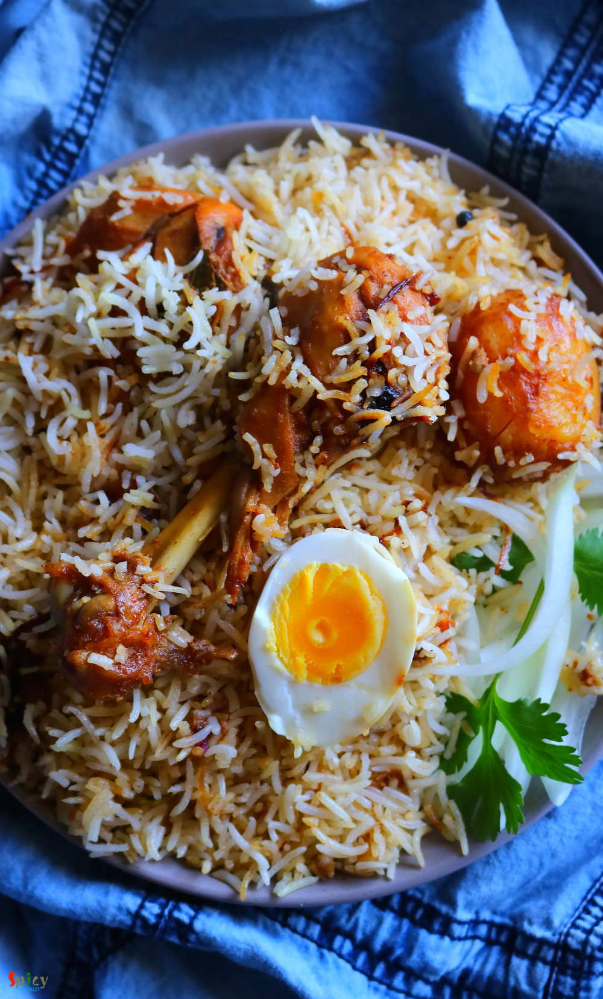

Simple and Easy Recipes
Kolkata style Chicken Biriyani / চিকেন বিরিয়ানি
© 2016 Spicy World, Published on: Sep 21, 2018
Kolkata style Chicken Dum Biriyani is one of the tastiest variety of biriyani recipe, which has awesome flavors and juicy chicken pieces. You can have it as it is or with Chicken Chaap / Korma / Kosha. I also have other Biriyani recipes in my blog. Cooking Biriyani is time consuming, also the more you practice the more you will get better at this. The process is lengthy but with few tricks and tips you can achieve exact restaurant like taste. In Kolkata, you can find the best Chicken Dum Biriyani at Arsalan, Aminia, Dada Boudi, Nizam's, Oudh and many other restaurants. Now lets enjoy the recipe with detailed video.

Ingredients
- 2 cups of good quality Basmati rice.
- 500 grams of with bone medium size chicken pieces.
- 2 cups of beresta or fried onion.
- Whole spices (one 4 inches cinnamon stick, 5 green cardamom, 5 cloves, 8 black peppercorns, a fat pinch of black cumin seeds or sahi jeera and half of a mace or javetri).
- Salt and sugar.
- 2 bay leaves.
- 2 Tablespoons of hot red chili powder.
- 3 - 4 Tablespoons of biriyani masala.
- 1 Tablespoon of fresh ginger garlic paste.
- 3 Tablespoons of yogurt.
- Pinch of turmeric powder.
- 2 small potatoes.
- 2 hard boiled eggs.
- 1/4th cup of warm milk.
- A fat pinch of saffron.
- 1 Teaspoon of kewra water.
- Half Teaspoon of rose water.
- 2 - 3 drops of mitha atar or screw pine essence.
- Half cup of oil.
- 2 Tablespoons of ghee.
- Half cup of hot water.
- 5 - 7 cups of water to boil the rice.


Steps
Marinate the chicken with yogurt, ginger garlic paste, salt, 3 Tablespoons of biriyani masala, red chili powder and 2 Teaspoons of oil. Mix well and let it rest for at least 4 hours.
Rub the peeled potatoes with some salt and turmeric powder. Then fry them in half cup of hot oil for 10 minutes on medium flame. After that take them out in a tissue paper.
In that same oil shake off the marination and add the chicken pieces. Fry them on high flame for 8-10 minutes.
Then add the marination and cook for 5 minutes.
Add the salt and some sugar. Mix well then add hot water and cook ubtil the chicken becomes 70% soft.
Then add a cup of fried onion and those fried potatoes. Cook until everything becomes soft.
Next, separate half of the gravy and the cooked potatoes for later use.
Add saffron, kewra water, rose water and mitha atar in a small bowl of warm milk. Mix well and keep it covered for later use.
Wash the basmati rice well with water and soak in cold water for at least 1 hour.
In a small cotton cloth add all of the whole spices, tie the ends.
Boil 5-7 cups of water in a vessel. Then add 3-4 Tablespoons of salt and that tied cloth. Let them boil for 2 minutes.
After that add soaked rice, bay leaves and 2 Tablespoons of oil.
Cook until the rice becomes 80% soft. Then remove the bay leaves and tied cloth carefully. After that immediately strain it in a colander.
Its time to layer the biriyani.
In a big pot or vessel arrange the cooked chicken with gravy.
Then spread half cup of fried onion all over the chicken, then place the potatoes at the edge of the vessel.
Next add the cooked rice carefully.
After that spread the gravy which we have separated earlier.
Now add another half cup of fried onion, then saffron essence soaked milk, 1 Tablespoon of biriyani masala, 2 Tablespoons of ghee and 2 hard boiled eggs.
Cover the pot with a piece of aluminium foil then place the lid.
Put the vessel on top of a tawa or pan. Turn on the gas and Cook first 10 minutes on high heat and next 15 minutes on low flame.
Turn off the heat and let it rest for 15 minutes.
Your delicious Kolkata style Chicken Biriyani is ready to serve.
Enjoy this hot with Chicken chaap / Kosha / Korma.
")